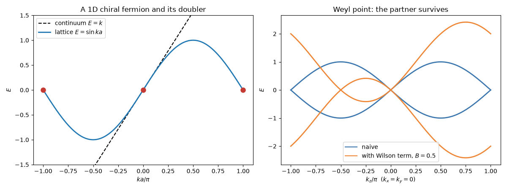

Note
Go to the end to download the full example code.
Fermion Doubling: the Nielsen-Ninomiya Theorem#
A k·p model can have a single Dirac or Weyl point. A lattice model cannot. H. B. Nielsen and M. Ninomiya (1981) proved that on a lattice, with local hoppings and the symmetry of the Hamiltonian kept, chiral fermions come in pairs: the band is periodic in \(\mathbf{k}\), so every right-moving branch must turn back into a left-moving one somewhere in the Brillouin zone, and the chiralities of all the Weyl points add up to zero. Lattice gauge theory met the problem first, as fermion doubling: the naive discretization \(k \to \sin(ka)/a\) vanishes at \(ka = \pi\) too, with the opposite velocity. K. Wilson’s cure adds a term \(\propto (1 - \cos ka)\) that gaps the doublers at the zone boundary, but in a Weyl semimetal it can only push them together in pairs, never leave one alone.
This is the caveat of putting k·p models on a lattice with
tbkit.continuum.discretize(): the lattice model agrees with the
continuum one near \(\mathbf{k} = 0\), and may have additional
low-energy states elsewhere. tbkit.topology.find_weyl_points()
counts the Weyl points and their chiralities.
import numpy as np
import matplotlib.pyplot as plt
from tbkit.bridges import finite_system
from tbkit.continuum import discretize
from tbkit.plot import Plot
from tbkit.topology import find_weyl_points
One chiral fermion in 1D#
The continuum model \(H = k\) is a single right mover. Its discretization is \(\sin(ka)/a\): the right mover at \(k = 0\) and, at \(ka = \pi\), a left mover with velocity \(-1\). The lattice has as many right movers as left movers.
chiral = discretize('k_x')
k = np.linspace(-np.pi, np.pi, 401)
e_chiral = chiral.get_bands(k[:, None])[:, 0]
assert np.allclose(e_chiral, np.sin(k))
dk = 1e-6
for k0, v_expected in ((0., 1.), (np.pi, -1.)):
v = (chiral.get_bands([[k0 + dk]])[0, 0] - chiral.get_bands([[k0 - dk]])[0, 0]) / (2 * dk)
print('E = 0 at ka = {:.4f}, velocity {:+.4f}'.format(k0, v))
assert np.isclose(v, v_expected)
E = 0 at ka = 0.0000, velocity +1.0000
E = 0 at ka = 3.1416, velocity -1.0000
The lattice of that discretization, ten cells of it
(finite_system()): a chain with one site per cell
and purely imaginary nearest-neighbour hoppings, all of the same
amplitude.
fig_lat = Plot(finite_system(chiral, 10)).lattice(plt_hop=True, ms=12, figsize=(7, 1.2))
Eight Weyl points from one#
\(H = \mathbf{k}\cdot\boldsymbol\sigma\) has one Weyl point of chirality \(+1\). Discretized, it becomes \(\sum_i\sin k_i\,\sigma_i\), which vanishes wherever each \(k_i\) is \(0\) or \(\pi\): eight Weyl points. Each \(\pi\) flips the sign of one velocity and so of the chirality, giving four of each sign, with total chirality 0.
weyl = discretize('k_x*sigma_x + k_y*sigma_y + k_z*sigma_z')
naive = find_weyl_points(weyl, 0, nk=8)
for kp, c in zip(naive.k, naive.chirality):
n_pi = int(np.sum(np.isclose(np.abs(kp), np.pi)))
print('Weyl point at k/pi = {}, chirality {:+d}'.format(np.round(kp / np.pi, 3), c))
assert c == (-1) ** n_pi
assert len(naive.k) == 8
assert naive.total_chirality == 0
Weyl point at k/pi = [0. 0. 0.], chirality +1
Weyl point at k/pi = [ 0. 0. -1.], chirality -1
Weyl point at k/pi = [ 0. -1. 0.], chirality -1
Weyl point at k/pi = [ 0. -1. -1.], chirality +1
Weyl point at k/pi = [-1. 0. 0.], chirality -1
Weyl point at k/pi = [-1. 0. -1.], chirality +1
Weyl point at k/pi = [-1. -1. 0.], chirality +1
Weyl point at k/pi = [-1. -1. -1.], chirality -1
Wilson’s term removes doublers only in pairs#
Add \(B\,k^2\sigma_z\), which becomes
\(B(6 - 2\cos k_x - 2\cos k_y - 2\cos k_z)\sigma_z\) on the lattice:
zero at \(\Gamma\), so the continuum Weyl point is untouched, but
large at the zone boundary. From \(B = 1/4\) on, the six doublers with
\(k_x\) or \(k_y\) at \(\pi\) are gapped out. One partner
survives: on the \(k_z\) axis, \(\sin k_z + B(2 - 2\cos k_z) = 0\)
has a second root at \(k_z = -2\arctan(1/2B)\) (\(-\pi/2\) at \(B = 1/2\)), of
chirality \(-1\). A larger \(B\) moves it towards \(\Gamma\)
(the mesh of find_weyl_points must then be fine enough to resolve
the pair, here 24 points per direction), but no value of \(B\)
leaves the Weyl point alone.
wilson = discretize('k_x*sigma_x + k_y*sigma_y + (k_z + B*(k_x**2 + k_y**2 + k_z**2))*sigma_z')
for B in (0.25, 0.5, 1., 2.):
wilson.set_params(B=B)
found = find_weyl_points(wilson, 0, nk=24)
partner = found.k[np.argmax(np.linalg.norm(found.k, axis=1))]
kz_expected = -2 * np.arctan(1 / (2 * B)) # sin kz + 2B(1 - cos kz) = 0
print('B = {:4.2f}: {} Weyl points, chiralities {}, partner at kz = {:+.4f} (expected {:+.4f})'
.format(B, len(found.k), found.chirality.tolist(), partner[2], kz_expected))
assert len(found.k) == 2 and found.total_chirality == 0
assert np.allclose(partner, [0., 0., kz_expected], atol=1e-6)
wilson.set_params(B=0.5)
B = 0.25: 2 Weyl points, chiralities [1, -1], partner at kz = -2.2143 (expected -2.2143)
B = 0.50: 2 Weyl points, chiralities [1, -1], partner at kz = -1.5708 (expected -1.5708)
B = 1.00: 2 Weyl points, chiralities [1, -1], partner at kz = -0.9273 (expected -0.9273)
B = 2.00: 2 Weyl points, chiralities [1, -1], partner at kz = -0.4900 (expected -0.4900)
The bands along \(k_z\) (\(k_x = k_y = 0\)): the naive model crosses zero at \(\Gamma\) and at the zone boundary; Wilson’s term moves the second crossing, but cannot remove it.
kz = np.column_stack([np.zeros_like(k), np.zeros_like(k), k])
fig, (ax1, ax2) = plt.subplots(1, 2, figsize=(12, 4.5))
ax1.plot(k / np.pi, k, 'k--', lw=1.5, label='continuum $E = k$')
ax1.plot(k / np.pi, e_chiral, lw=2, label=r'lattice $E = \sin ka$')
ax1.plot([0, 1, -1], [0, 0, 0], 'o', color='#c53a32', ms=8)
ax1.set_ylim(-1.5, 1.5)
ax1.set_xlabel(r'$ka/\pi$')
ax1.set_ylabel('$E$')
ax1.set_title('A 1D chiral fermion and its doubler')
ax1.legend()
ax2.plot(k / np.pi, weyl.get_bands(kz), color='#3b76af', lw=2)
ax2.plot(k / np.pi, wilson.get_bands(kz), color='#ef8636', lw=2)
ax2.plot([], [], color='#3b76af', label='naive')
ax2.plot([], [], color='#ef8636', label='with Wilson term, $B = 0.5$')
ax2.set_xlabel(r'$k_z/\pi$ ($k_x = k_y = 0$)')
ax2.set_ylabel('$E$')
ax2.set_title('Weyl point: the partner survives')
ax2.legend()
fig.tight_layout()

Total running time of the script: (0 minutes 0.384 seconds)